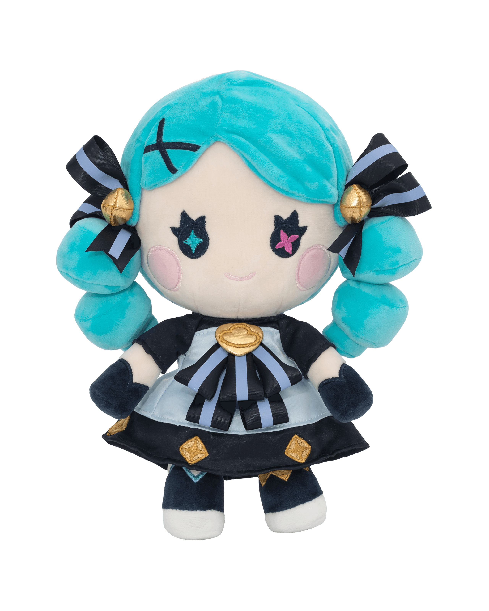

CV for Gwen
Past Experience betweeen the years of 1048-1073
Assistance of a very known seamstress
Isolde was the seamstress name
The location was in camavor in RunterraHelped a league of heroes to take down a nasty villain
They were called the sentinels of light
It was all over Runteraa
Edjucation
Got an excellent edjucation throught working with Isolde, Knows the core and basics of sewing and is great with anything involving needles and thread
Skills
Great with needles and pins
Strong and can carry heavy objects
Elegant with the way she works
Very friendly and has easy making friends
Contact me through
Gwen@lolinting.com
493-36 65 05